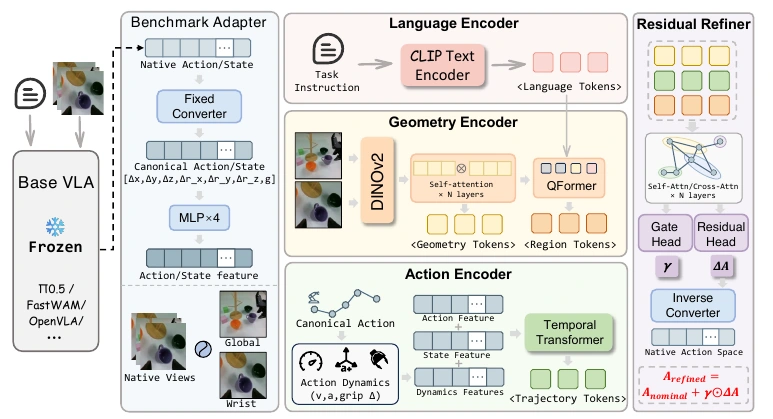

GeoRefiner
Geometry-Conditioned Plug-and-Play Action Refinement for Vision-Language-Action Models
在基础策略之后做修正
基础 VLA 先给出一段动作。GeoRefiner 结合场景几何、指令和这段动作预测残差，用于修正轨迹。模块位于原策略下游，基础模型参数保持冻结。

跨模型复用
分阶段训练先建立几何表示，再训练细化模块，并以轻量适配连接新的基础策略。论文比较了不同骨干和环境扰动下的表现。